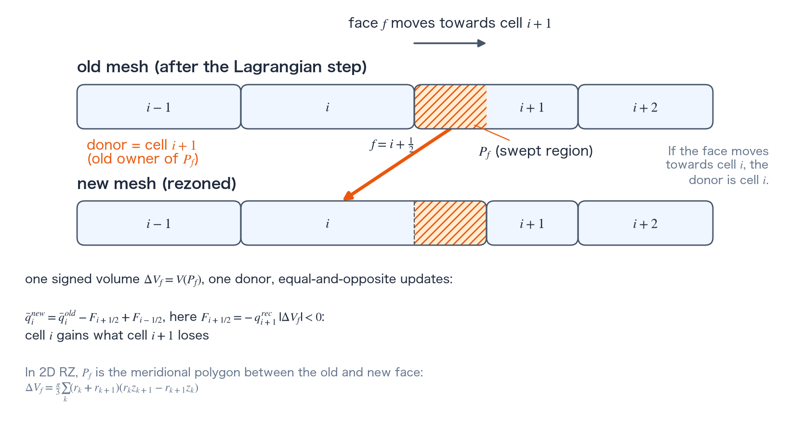

Conservative remap
Conservative remap transfers extensive quantities (mass, momentum, internal energies, radiation-group energies) between an old and a new mesh of the same connectivity by the signed swept volume of each face. The default legacy_split is directionally split; the opt-in ms2_moments is a Margolin–Shashkov second-order moment remap [1]. This page gives the swept-region volume and the conserved-quantity update, the donor choice, the limiters, and the closure of the kinetic-energy budget.
Swept-region conservative remap
Figure A shows the swept region and the transfer from the donor to the receiving cell in a one-dimensional strip. The default legacy_split alternates the ordering of R and Z swept-region sweeps. Revolving the meridional polygon \(P_f\) between an old and new face gives the signed volume
Here \((r_k,z_k)\) are the vertices of the meridional polygon \(P_f\) swept between the old and new face; the prefactor \(\pi/3\) comes from the exact revolution about the axis.
For each internal face, TENRYU chooses one donor and computes one flux, then applies equal-and-opposite updates. A conservative cell integral \(\bar q=qV\) changes as
$$ \bar q_i^{new}=\bar q_i^{old}-F_{i+1/2}+F_{i-1/2}. $$(\(F_{i\pm1/2}\) are the conserved-quantity fluxes through the two faces of cell \(i\), evaluated from the donor-side reconstructed state and the swept volume.) The transferred quantities are mass, R/Z momentum, electron/ion internal energy, material volume, and every radiation-group energy. Density is recovered as \(m^{new}/V^{new}\), velocity as remapped momentum/mass, and specific energy as remapped extensive energy/mass. Remap transports conservative integrals first, rather than directly averaging intensives such as \(\rho\), \(\mathbf u\), or \(e\).
- Signed swept region \(P_f\): its sign records the direction of face motion, while its magnitude is the volume exchanged across that face.
- Donor selection: the sign of the swept volume selects the upwind donor cell; that same donor supplies the reconstructed state for the single face flux.
- MS2 limiter: the limited linear reconstruction is monotone second order and prevents the remap from creating new local extrema.
- Exact RZ geometry: polygon revolution evaluates both the swept volume and, for MS2, the swept polygon's exact first moment rather than a near-axis first-order approximation.
- Kinetic-energy budget:
ke_conservation_closureadds the diagnostic-compatible kinetic-energy remap/projection discrepancy to material internal energy. - Corner-mass timing: corner masses remain invariant through Lagrangian motion and rejected proposals, and are rebuilt only after an accepted conservative remap.
- Trigger metrics: cadence, cell quality, axis margin, and corner-J determine whether the geometry transaction is attempted.

MS2 limiters and the kinetic-energy budget
The opt-in ms2_moments path is a Margolin–Shashkov-style second-order moment remap. It reconstructs \(q(\mathbf x)=q_L+\nabla q_L\cdot(\mathbf x-\mathbf x_L)\) from a four-neighbor least-squares slope and limits it with van_leer or barth_jespersen. Using the exact first moment \(M_1(P_f)\), the donor integral is
(\(|P_f|\) is the revolved volume of the swept polygon \(P_f\), the same quantity as \(\Delta V_f\).) Legacy split and MS2 both use the same face flux with opposite signs on its two cells, so limiting preserves pairwise conservation. Per-sweep mass/internal/radiation positivity and final EOS re-closure remain separate checks.
Projecting cell momentum back to nodal velocity does not generally preserve kinetic energy exactly. The default-on ke_fixup is a control accepted for compatibility with legacy decks (definition); the following ke_conservation_closure actually handles the post-projection kinetic-energy deficit. ke_conservation_closure remaps \(q_K=K_c^{diag}/V_c\) using the corner-mass/nodal-velocity measure (the result being \(K_c^{remap,*}\)), then deposits \(\Delta I_c=K_c^{remap,*}-K_c^{node,*}\) into material internal energy: all of it into the single energy in one temperature, all of it into the ions in two. It is read by the single-block ALE step only (a single-block 2D_RZ mesh with ALE enabled, outside the identity mode, with band ALE off or composed with the rezone). There it is off by default in one temperature and on by default in two (an explicit False is honored with a warning), because without it the remap and the node projection change the kinetic energy and the ions never receive the change. An optional positivity redistribution draws a deficit from global positive capacity and records any unresolved remainder in a ledger.
Namelist controls
These are selected Numerics.ale controls. See the namelist reference for all fields and validation rules.
| Key | Default | Purpose |
|---|---|---|
remap_scheme | "legacy_split" | Directional swept-region remap; opt-in "ms2_moments". |
remap_limiter | "van_leer" | Limiter for legacy-split donor reconstruction. |
ke_fixup | True | Legacy post-remap kinetic-energy fixup compatibility control. |
Verification
- Remap conservation ledgers track mass, R/Z momentum, material internal energy, radiation-group energy, and explicit floor or redistribution terms. The general remap mass criterion is \(\le 10^{-14}\) relative error. Managed axis-band unit tests use \(10^{-12}\) for mass/internal/radiation energy and \(10^{-14}\) for the changes of kinetic and total energy under a uniform translation. At runtime the band rolls back when the mass, radiation-energy (when the band holds radiation energy), cell-momentum, or nodal-momentum residual exceeds \(10^{-8}\), or when the residual of the band's total energy (internal plus kinetic) exceeds \(\min(10^{-10},\,2\times10^{-16}\sqrt{B})\) with \(B\) the number of band cells.
References
- L. G. Margolin and M. J. Shashkov, "Second-Order Sign-Preserving Conservative Interpolation (Remapping) on General Grids," J. Comput. Phys. 184, 266–298 (2003). doi:10.1016/S0021-9991(02)00033-5